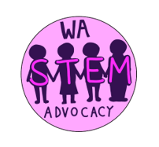

Everstem Events
A non-profit organization run by students for students
Everstem Education is dedicated to making STEM educational opportunities more accessible for all students through free workshops, seminars, hackathon events.
Upcoming: CADTable
March 22nd, 2022 - April 3rd, 2022
CADTable is a global online computer-aided design (CAD) competition for all students over the age of 13 around the
world. Students from all CAD experience levels ranging from novices to advanced CAD designers can find categories that
can challenge them to think critically. Timeline:
March 22nd at 7:00 PM PT: How to Design a Part Workshop
March 23rd at 4:30 PM PT: Integrating Parts into Assemblies Workshop
March 27th at 12:00 PM PT: Kickoff (and released prompts)
March 28th at 5:00 PM PT: Rendering CAD Workshop
April 3rd - 8:00 AM PT: CADTable Submissions Close
April 3rd - 5:00 PM PT: CADTable Award Ceremony
This event is hosted by Everstem Education and FIRST FTC 18225 High Definition Team.
Business at Everyday Robots
March 20th, 2022 (Sun) 5pm DTP
Jasmine Lawrence is a Product Manager at Everyday Robots. Everyday Robots is building a new type of learning robot— one
that can learn by itself, to help anyone with (almost) anything. Prior to this, she served on the Blood Donations and
Portal teams at Facebook as a Technical Program Manager. Before that, Jasmine was a Technical Program Manager at
SoftBank Robotics America where she led a multidisciplinary team to create software for social, humanoid robots.
Earlier
in her career, Jasmine was a Program Manager at Microsoft. On the Microsoft HoloLens Experience team, Jasmine created
customer-driven Mixed Reality applications for enterprise partners. Jasmine Lawrence will give a talk in honor of Women's History Month and STEM. This opportunity is provided by FIRST FTC Team 18225 team.

Intellectual Property Protection in Robotics and Smart Transportation
February 28th, 2022 (Mon) 7 pm PST
Shaobin Zhu will give a talk about IP Protection in Robotics and Smart Transportation. Shaobin Zhu is a partner who
focuses on IP (patent, trade secret, trademark, copyright, and domain name) litigation in US district courts and Section
337 investigations at the US International Trade Commission (ITC), as well as client counseling, IP licensing and
transfer, opinion work, patent prosecution, data privacy, open-source software strategy, and international arbitration.
Shaobin handles matters relating to a variety of technologies, including computer software, telecommunications,
smartphones, artificial intelligence (AI), Internet of Things (IoT), semiconductors, LEDs, wearable devices, robotics,
3D printing, consumer electronics, and related electronics. This opportunity is provided by FIRST FTC Team 18225 team.
Connecting with Professionals:
Laura LeBlanc - Science & Education
January 28th, 2022 (Fri) 7 PM PST
Laura LeBlanc will talk about her journey and Science & Education: Indoors & Out. Laura is an Upper School Science Faculty member at The Bush School where she teaches Chemistry, Environmental Science, and Regional Geology of the PNW. Prior to teaching at Bush, she taught science at Seattle Academy of Arts and Sciences (SAAS). This opportunity is provided by FIRST FTC Team 18225 team.

Washington State STEM Advocacy - Lobby Day Training
January 17th, 2022 (Mon) from 1 - 5 PM PST

WA STEM Advocacy is an effort to advocate for funding and access to STEM Education in Washington State by supporting Senate Bill 5092 Section 522 for FIRST funding.
The upcoming training on January 17th is to train participants on how to talk to legislators about STEM Advocacy. To participate in the lobby day event held towards the end of January, the training is required.
Hosted by FIRST FTC Team 18225 & Everstem Education.

Artificial Intelligence & Robotics
January 8th, 2022 (Sat) 10:00 AM PST
Talk from Anne Kao , an Executive Consultant at the Collinear Group about artificial intelligence and robotics.
Anne Kao was a Senior Technical Fellow in Boeing where she worked for 30 years. Anne is a recognized industry leader in data analytics and artificial intelligence.
She has worked on a wide range of applications such as aviation safety, airplane maintenance and reliability, cyber analytics, knowledge discovery, knowledge management and survey data analysis. She has led talented teams with diverse backgrounds such as data analytics, software and database development, mathematics, and a variety of engineering disciplines. This opportunity is provided by FIRST FTC Team 18225 team.
Leveraging 1/10th Scale Designs for Connected/Automated Vehicles
2021 (December 19th) 9:00AM PST
Dr. Osama A. Osman will give a talk about leveraging 1/10th Scale Designs for Connected/Automated Vehicle Research. Dr. Osman is the Assistant Professor of Intelligent Transportation Systems and Data Analytics in the Department of Civil and Chemical Engineering (CCE) and the Mobility Thrust Lead in the Center for Urban Informatics and Progress at the University of Tennessee at Chattanooga (UTC).
Prior to joining UTC, he was a research faculty in the Center for Sustainable Mobility at Virginia Tech Transportation Institute (VTTI). He holds a Ph.D. degree from Louisiana State University on the User and System Characteristics of Connected Vehicle Technology. This opportunity is provided by FIRST FTC Team 18225 team.

Connected Automated Vehicles
2021 (November 21) 1:00pm DTP
Dr. Xiaopeng (Shaw) Li will give a talk about Connected Automated Vehicles. Dr. Li is currently the Susan A. Bracken
Associate Professor in the Department of Civil and Environmental Engineering and also affiliated with the
Center for Urban Transportation Research (CUTR) at the University of South Florida (USF).
His key research interests include technology developments, system modeling, and energy and equity impacts analysis of
automated, connected, electric, and shared (ACES) transportation. This opportunity is provided by FIRST FTC Team 18225 team.

AI Applications in Transportation Engineering
2021 (November 06) 2:00pm DTP
Professor Yinhai Wang , a professor in transportation engineering and the founding director of the Smart Transportation Applications and Research Laboratory (STAR Lab) at the University of Washington will give a talk about AI Applications in Transportation Engineering. He also serves as director for Pacific Northwest Transportation Consortium (PacTrans), USDOT University Transportation Center for Federal Region 10.
Dr. Wang’s active research fields include traffic sensing, e-science of transportation, big-data analytics, traffic operations and simulation, smart urban mobility, transportation safety, etc. This opportunity is provided by FIRST FTC Team 18225 team.
Experiences as a Researcher and Physicist
2021 (October 26) 3:30pm DTP
Professor Gwynne Crowder, a physicist with broad experience in cutting-edge astrophysical research, will give a talk about all of the specifics of the projects and research she's done as a physicist. She has searched for remnants of the early universe from Antarctica, she has launched a rocket from the desert of New Mexico to study hot gases in space, and she has traveled deep underground in South Dakota to aid in the search for gravitational waves.
Throughout her pursuits, Professor Crowder has specialized in hands-on instrumentation and computational data analysis. She is a physics professor at Bellevue College. This opportunity is provided by FIRST FTC Team 18225 team.

HackTable Hackathon
2021 (July 24nd - July 25th)

HackTable is a global online hackathon for all students across the globe with $119,005 in total prizes. 460+ Students of all levels of computer science experience ranging from novices to experienced coders found categories that can challenge them to think critically.
Watch video recordings on Everstem's YouTube Channel:
- HackTable Hackathon Opening Ceremony
- Symbl.ai - Integrate Conversation Intelligence Into Your Applications - Akanksha Bhasin and Eric Giannini
- echoAR Workshop: Building an AR/VR App in Under 15 Minutes - echoAR
- A 16-year Old Who Sold His Company to Fiveable for a 6-Figure Valuation - Calix Huang
- The History of Computing and Gaming - Benjamin Alexander Moskalensky
- HackTable2021 Awards Ceremony
All-Girls Computer Science Workshop
2021 (July 21st, 22nd, and 23rd) 4:30 - 5:30 PM PDT

Everstem Education will be hosting a free computer science workshop for middle school aged girls, but any girls interested in computer science are welcome! We will be covering a variety of topics such as the history of CS, computational thinking, computer hardware, encryption, decryption, cybersecurity, internet safety, and beginner Python programming.
Game Theory Workshop
2021 (July 13th, 14th, and 15th) 1:00pm to 3:30pm PDT

Everstem Education will be hosting a free workshop for teens about Game Theory, a mathematical simulation of real-world interactions used in the business world meant to model how certain situations will play out given different actions.
The Art of Business and Inventing
2021 March 27th 5:00PM PST

Entrepreneur and published author Ryfka Schafer will be presenting her career experiences. She will talk specifically about her product, the Litter Picker Sticker, covering the art and business of inventing, prototyping, copyrighting, trademarking, and patenting. This opportunity is provided by FIRST FTC Team 18225 team.
Industrial Robotics Applications in Japan
2021 February 27th 4:00 PM PST
Shiyu Xia will introduce industrial robotics applications and different robotics companies in Japan. Shiyu Xia is currently working as a hardware engineer at Mujin Inc. in Tokyo, a company that innovates in the field of industrial robot applications. His main focus is on designing printed circuit boards, which are integrated into interface devices and industrial computers. This opportunity is provided by FIRST FTC Team 18225 team.
Beginner Python Workshop
2021 (February 6th, 13th, and 20th) 4:00 - 5:00 PST

Everstem is hosting a free Beginner Python Workshop with FIRST FTC Team 18225 team that's open to all students. Anyone is welcome to join. Before the start of the workshop, please download the latest version of Python, and download PyCharm.
Careers in the Gaming Industry
2021 February 3rd, 5:00 PM PST (12:00 AM GMT)
Robert and Kirk from Bellevue based game studio ArenaNet will share information on career options in gaming, and describe their roles and experiences working in the industry. A short presentation will be followed by an open Q&A session. This opportunity is provided by FIRST FTC Team 18225 team.
Startup Life Cycle and Business Funding
2020 December 26th, 2:00 PM PST (10:00 PM GMT)
Howie will speak about startup life cycles and business funding. He will answer any questions students may have. Howie Xu is a silicon valley serial entrepreneur and investor. Howie is the CEO/Founder of TrustPath which was acquired by Zscaler (NASDAQ: ZS) in 2018. Before that, he was an EIR of Greylock Partners. Before that, he was a senior executive at Cisco and VMware. This opportunity is provided by FIRST FTC Team 18225 team.
HackTable Hackahon
2020 (November 27nd - November 29th)
HackTable is a global online hackathon for all students across the globe. More than 300 Students of all levels of computer science experience ranging from novices to experienced coders participated in this event with $37,530 worth total prizes.
Watch video recordings on Everstem's YouTube Channel:
- HackTable Hackathon Opening Ceremony
- Keynote - Nick Hughes
- Intro to CAD (PTC Creo) Workshop- Emma Shi, Osheen Tikku
- Cyber Security Talk and Workshop - Helen Oakley
- How to Build a Cloud-Connected AR/VR App in 15 Minutes or Less - echoAR
- EazyML Workshop - Vikram Nunia
- Intro to Data Science and Machine Learning Workshop Part 1 | Part 2- Harkirat Singh
- HackTable Hackathon Closing Ceremony
Mixed Reality & Robotics
2020 November 22nd, 11 AM PST (7:00 PM GMT)
Jeff Delmerico (Senior Scientist from Microsoft), will give a talk on Robotics, Mixed Reality, and the merging of the real and virtual worlds. He will also answer any questions you may have. Jeff has over 10 years of experience in research, focused primarily on robotic perception. This work spans a variety of domains (visual-inertial odometry, machine learning, semantic perception), sensor modalities (monocular, stereo, and depth cameras), and hardware platforms (ground robots, marine robots, and drones) but a common theme throughout these projects has been enabling novel behaviors in real-world environments through active perception. This opportunity is provided by FIRST FTC Team 18225 team.
Business and Entrepreneurship in Robotics
2020 October 22nd, 4PM PDT (11:00PM GMT)
Fab Qian (Senior Business Planner), Meera Rajagopalan (Product Marketing Manager), and Hannah Liu (Business Development Manager) from the Microsoft Robotics Marketing team will give an hour-long talk on business and entrepreneurship in Robotics. They will provide students an overview of the Cloud Robotics landscape, business opportunities for robotics innovators, and how Microsoft is helping robotics startups. They will also share their career experience working in Microsoft. This opportunity is provided by FIRST FTC Team 18225 team.